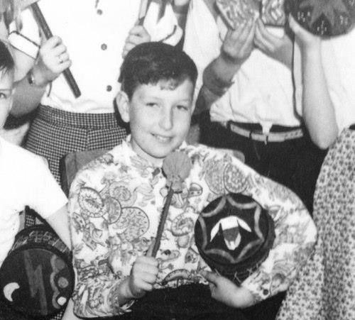
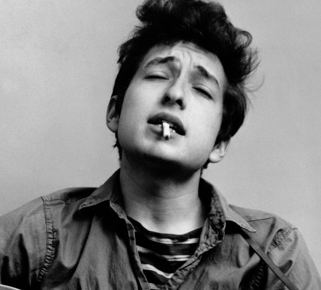
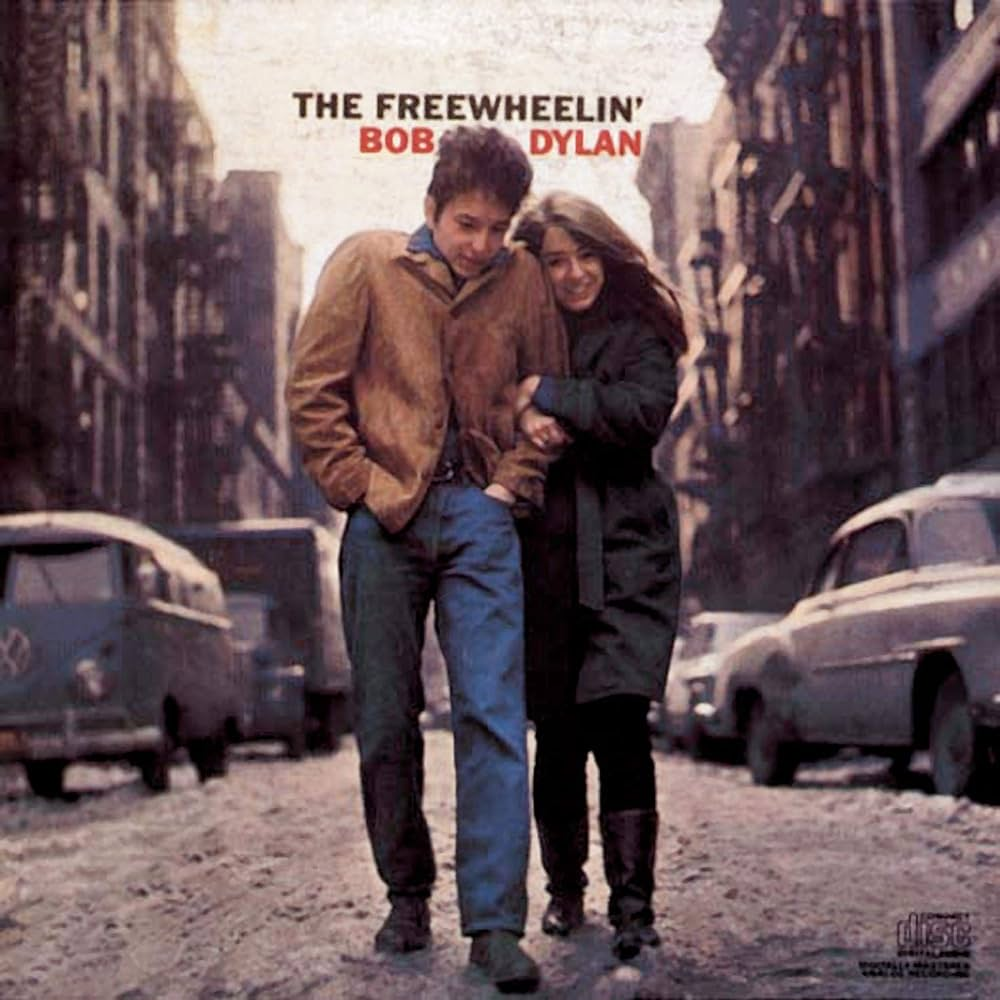
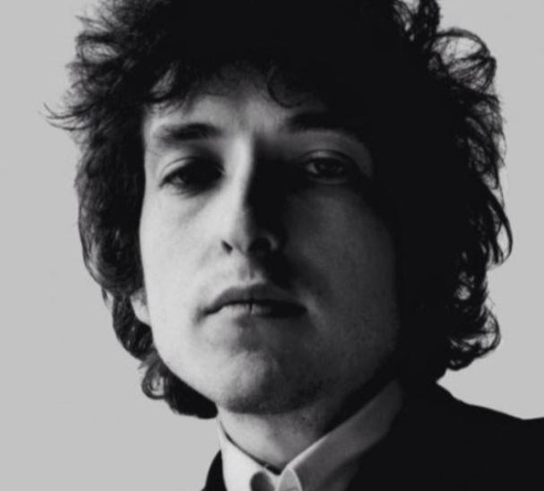

Early Life
Dylan grew up in Hibbing, Minnesota, where he developed a deep love for music, particularly folk, blues, and rock and roll. He formed several bands during his high school years.

Move to New York
In 1961, Dylan moved to New York City and immersed himself in the burgeoning folk music scene in Greenwich Village. He quickly gained attention for his unique voice, songwriting ability, and charismatic presence.

Breakthrough Albums
Dylan's self-titled debut album was released in 1962, but it was his second album, "The Freewheelin' Bob Dylan" (1963), that established him as a major voice in music. This album included some of his most famous songs, such as "Blowin' in the Wind" and "A Hard Rain's a-Gonna Fall."

Electric Transition
In 1965, Dylan shocked the folk music world by "going electric" at the Newport Folk Festival. This transition was marked by the release of "Bringing It All Back Home" (1965), "Highway 61 Revisited" (1965), and "Blonde on Blonde" (1966), albums that featured a rock-oriented sound.